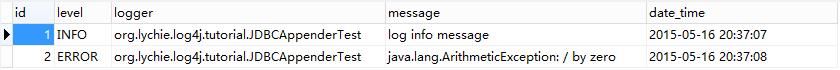
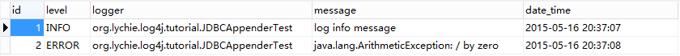

log4j
来源：原创 发布时间：2015-05-16 归档：logging
环境 ：
JDK 7
Log4j 1.2.16
Maven 3
Junit 4.11
Eclipse Luna
[+]
目录
<dependency>
<groupId>log4j</groupId>
<artifactId>log4j</artifactId>
<version>1.2.16</version>
</dependency>
日志级别
org.apache.log4j.Level 提供了 8 种日志信息的级别, 它们按从小到大的关系为：
ALL < TRACE < DEBUG < INFO < WARN < ERROR < FATAL < OFF
假设配置的日志级别为 X, 使用的级别为 Y, 当且仅当 Y >= X 时, 日志请求才会被处理，否则被忽略。
ALL < TRACE < DEBUG < INFO < WARN < ERROR < FATAL < OFF
假设配置的日志级别为 X, 使用的级别为 Y, 当且仅当 Y >= X 时, 日志请求才会被处理，否则被忽略。
public class LogLevelTest {
private Logger log = Logger.getLogger(LogLevelTest.class);
@Test
public void testLevel() {
log.setLevel(Level.INFO);
log.info("log info message");
log.error("log error message");
log.debug("log debug message");
}
}
这里设置了日志的级别为 INFO, 那么, INFO 和 ERROR 级别的信息将被处理, DEBUG 级别的信息将被忽略。执行单元测试的结果 ：
log info message
log error message
PatternLayout
log error message
org.apache.log4j.PatternLayout 的 conversionPattern 属性可以设置日志信息格式化的模式串, 可以灵活的控制日志信息的格式布局。
属性配置文件语法
| Format | Desc |
|---|---|
| %c | 输出发出日志请求的类的完全限定名 |
| %d | 输出日志发生的时间, 如 %d{yyyy-MM-dd HH:mm:ss} |
| %F | 输出发出日志请求的类的文件名 |
| %l | 输出发出日志请求的位置信息 |
| %L | 输出发出日志请求的行的行号 |
| %m | 输出运用程序提供的日志信息 |
| %M | 输出发出日志请求的方法名称 |
| %n | 输出一个换行符 |
| %p | 输出日志的级别 |
| %t | 输出记录日志的线程的名称 |
| %-5p | 输出日志的级别, 如果长度少于 5 个字符, 用空格右补足 |
| %5p | 输出日志的级别, 如果长度少于 5 个字符, 用空格左补足 |
root logger 配置, 其中 appender1, appender2 是 Appender 组件, 可以配置多个, 用 "," 隔开 ：
log4j.rootLogger = [日志级别], appender1, appender2 . . .
appender 配置, 常见的如 ConsoleAppender, DailyRollingFileAppender, RollingFileAppender 等 ：
log4j.appender.appender1 = org.apache.log4j.ConsoleAppender
appender 属性配置, 如 ConsoleAppender 的 target 属性 ：
log4j.appender.appender1.target = System.out
layout 配置, 常见的如 PatternLayout, HTMLLayout, TTCCLayout 等 ：
log4j.appender.appender1.layout = org.apache.log4j.PatternLayout
layout 属性配置, 如 PatternLayout 的 conversionPattern 属性 ：
log4j.appender.appender1.layout.conversionPattern = %-5p %d{yyyy-MM-dd HH:mm:ss} %c : %L %n%m%n
ConsoleAppender
log4j.rootLogger = [日志级别], appender1, appender2 . . .
log4j.appender.appender1 = org.apache.log4j.ConsoleAppender
log4j.appender.appender1.target = System.out
log4j.appender.appender1.layout = org.apache.log4j.PatternLayout
log4j.appender.appender1.layout.conversionPattern = %-5p %d{yyyy-MM-dd HH:mm:ss} %c : %L %n%m%n
用于在控制台输出日志信息, log4j.properties 文件的配置如下 ：
log4j.rootLogger = INFO, console
log4j.appender.console = org.apache.log4j.ConsoleAppender
log4j.appender.console.target = System.out
log4j.appender.console.layout = org.apache.log4j.PatternLayout
log4j.appender.console.layout.conversionPattern = %p %d{yyyy-MM-dd HH:mm:ss} %c : %L %n%m%n%n
public class Log4jTest {
private Logger log = Logger.getLogger(Log4jTest.class);
@Test
public void testInfo() {
log.info("log info message");
}
@Test
public void testError() {
log.error("log error message");
}
}
执行单元测试 ：
INFO 2015-05-16 08:43:10 org.lychie.log4j.tutorial.Log4jTest : 13
log info message
ERROR 2015-05-16 08:43:10 org.lychie.log4j.tutorial.Log4jTest : 18
log error message
log info message
log error message
org.apache.log4j.RollingFileAppender 日志文件大小达到指定大小时, 产生一个新的文件。
log4j.rootLogger = INFO, roll
log4j.appender.roll = org.apache.log4j.RollingFileAppender
# 日志文件名称
log4j.appender.roll.file = my.log
# 日志文件大小
log4j.appender.roll.maxFileSize = 5KB
# 备份日志文件的个数
log4j.appender.roll.maxBackupIndex = 3
log4j.appender.roll.layout = org.apache.log4j.PatternLayout
log4j.appender.roll.layout.conversionPattern = %p %d{yyyy-MM-dd HH:mm:ss} %c : %L %n%m%n%n
日志文件大小默认是 1MB, 可以指定为 KB、MB、GB。备份日志文件的个数默认是 1 个, 如果设置为 0 个, 则表示不备份, 当文件大小达到指定大小时, 将覆盖当前日志文件的内容。
public class RollingFileAppenderTest {
private static final int MAX_COUNT = 500;
private Logger log = Logger.getLogger(RollingFileAppenderTest.class);
@Test
public void test() throws Throwable {
for (int i = 0; i < MAX_COUNT; i++) {
log.info("log info message - index : " + i);
Thread.sleep(100);
}
}
}
执行单元测试, 在项目根目录下产生 4 个文件, my.log, my.log.1, my.log.2, my.log.3。my.log.3 是最早产生的文件, my.log 是最晚产生的文件, 它们按时间从早到晚的顺序依次是 ：my.log < my.log.1 < my.log.2 < my.log.3
org.apache.log4j.DailyRollingFileAppender 每天产生一个新的日志文件。
log4j.rootLogger = INFO, daily
log4j.appender.daily = org.apache.log4j.DailyRollingFileAppender
log4j.appender.daily.file = my.log
log4j.appender.daily.datePattern = '.'yyyy-MM-dd
log4j.appender.daily.layout = org.apache.log4j.PatternLayout
log4j.appender.daily.layout.conversionPattern = %p %d{yyyy-MM-dd HH:mm:ss} %c : %L %n%m%n%n
my.log 记录的是当天的日志内容, 今天是2015年5月16日, 那么昨天的日志内容就会被备份到 my.log.2015-05-15 文件中。
org.apache.log4j.net.SMTPAppender 具有发送邮件的能力。使用时, 需要引入 mail 依赖包 ：
<dependency>
<groupId>javax.mail</groupId>
<artifactId>mail</artifactId>
<version>1.4.7</version>
</dependency>
log4j.properties 配置文件配置 ：
log4j.rootLogger = INFO, mail, console
log4j.appender.mail = org.apache.log4j.net.SMTPAppender
# 日志的级别
log4j.appender.mail.threshold = ERROR
# 缓冲区大小
log4j.appender.mail.bufferSize = 512
# 邮件标题
log4j.appender.mail.subject = Log Error Message
# 发件人
log4j.appender.mail.from = lychie@yeah.net
# 收件人
log4j.appender.mail.to = lychie@yeah.net
# 抄送人
log4j.appender.mail.cc = fanejob@163.com,fanejob@126.com
# 使用的协议
log4j.appender.mail.SMTPProtocol = smtp
# 邮件服务器
log4j.appender.mail.SMTPHost = smtp.yeah.net
# 邮件账户名
log4j.appender.mail.SMTPUsername = lychie
# 邮件账户密码
log4j.appender.mail.SMTPPassword = ******
log4j.appender.mail.layout = org.apache.log4j.PatternLayout
log4j.appender.mail.layout.conversionPattern = %p %d{yyyy-MM-dd HH:mm:ss} %c : %L %n%m%n%n
public class SMTPAppenderTest {
private Logger log = Logger.getLogger(SMTPAppenderTest.class);
@Test
public void testInfo() {
log.info("log info message");
}
@Test
public void testError() {
try {
int randomNumber = ThreadLocalRandom.current().nextInt(2);
randomNumber = 1 / randomNumber;
} catch (Throwable e) {
log.error("log error message", e);
}
}
}
执行单元测试, 只要当运用程序发生 ERROR 或更高级别的错误, lychie@yeah.net、fanejob@163.com、fanejob@126.com 将分别得到一个邮件通知：
{kind=link}
org.apache.log4j.jdbc.JDBCAppender 具有能够将日志信息存储到数据库的能力。这里使用 mysql 数据库, 引入驱动依赖包 ：
<dependency>
<groupId>mysql</groupId>
<artifactId>mysql-connector-java</artifactId>
<version>5.1.17</version>
</dependency>
创建表结构 ：
CREATE TABLE logs (
id int(11) NOT NULL AUTO_INCREMENT,
level varchar(5) NOT NULL,
logger varchar(128) NOT NULL,
message text NOT NULL,
date_time datetime NOT NULL,
PRIMARY KEY (id)
) ENGINE=InnoDB DEFAULT CHARSET=utf8;
log4j.properties 配置文件配置 ：
log4j.rootLogger = INFO, db
log4j.appender.db = org.apache.log4j.jdbc.JDBCAppender
log4j.appender.db.URL = jdbc:mysql://localhost:3306/log4j_schema
log4j.appender.db.driver = com.mysql.jdbc.Driver
log4j.appender.db.user = root
log4j.appender.db.password = root
log4j.appender.db.sql = insert into logs(level, logger, message, date_time) values('%p', '%c', '%m', '%d{yyyy-MM-dd HH:mm:ss}')
log4j.appender.db.layout = org.apache.log4j.PatternLayout
public class JDBCAppenderTest {
private Logger log = Logger.getLogger(JDBCAppenderTest.class);
@Test
public void testInfo() {
log.info("log info message");
}
@Test
public void testError() {
try {
int randomNumber = ThreadLocalRandom.current().nextInt(2);
randomNumber = 1 / randomNumber;
} catch (Throwable e) {
log.error(e);
}
}
}
执行单元测试, 数据库表数据 ：

